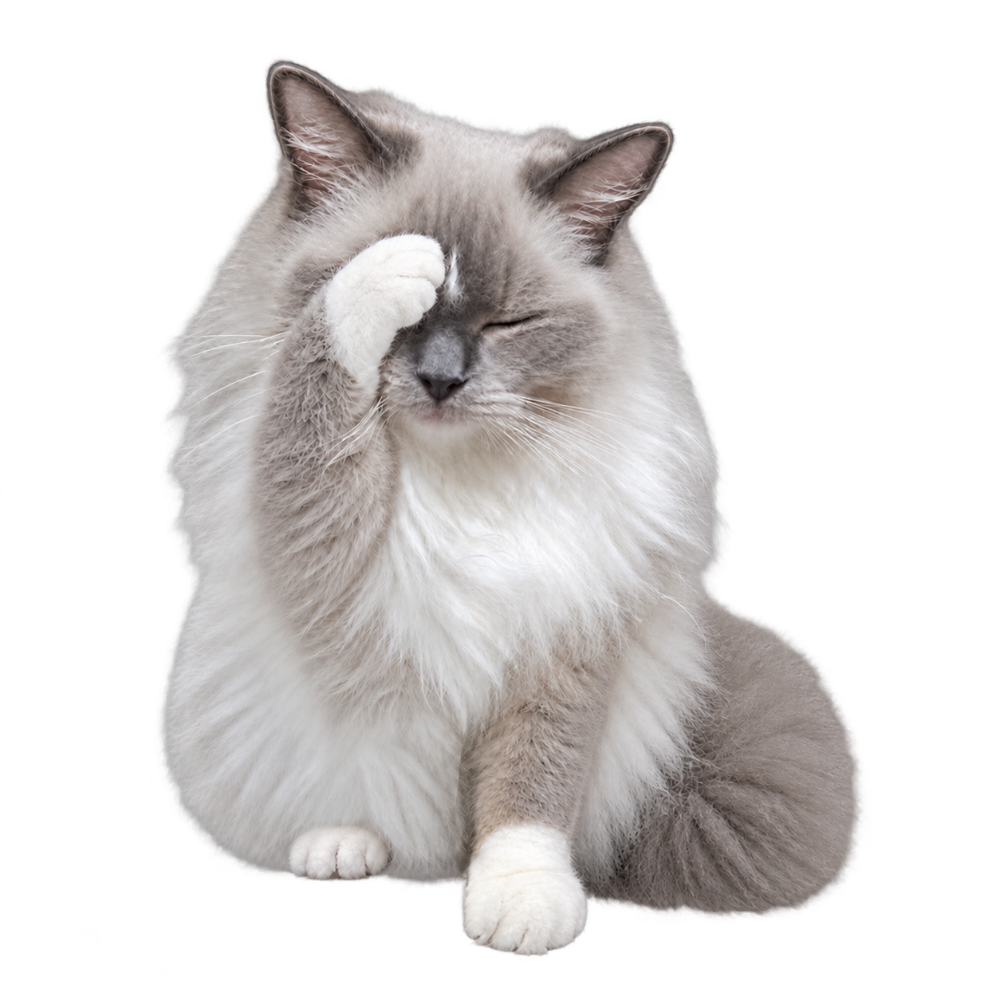

桌面互動
寵物會待機、眨眼、散步與休息，也能依照偏好調整顯示大小。
Windows 桌面陪伴程式
桌面寵物會在桌面上散步、休息與互動；連結 Google 日曆後，可在行程開始前提供提醒。日曆權限僅用於讀取，不會新增、修改或刪除行程。
今天也一起慢慢完成。

主要功能

寵物會待機、眨眼、散步與休息，也能依照偏好調整顯示大小。
讀取當日近期行程，在設定的時間前以寵物對話框與音效提醒。
Google 授權憑證加密保存在使用者的 Windows 裝置上，不提供給其他使用者。
Google Calendar
